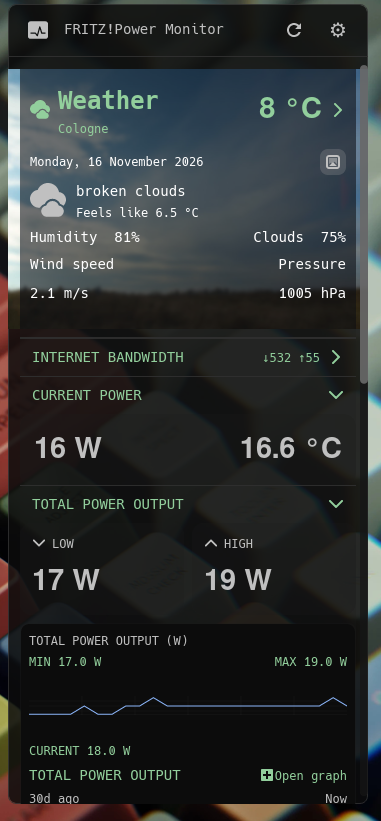
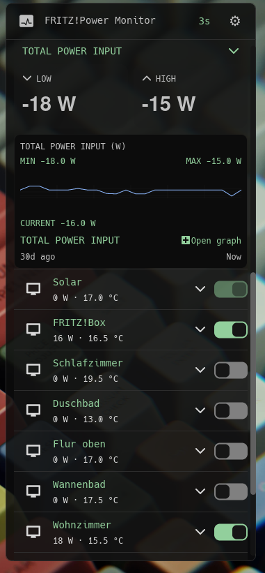
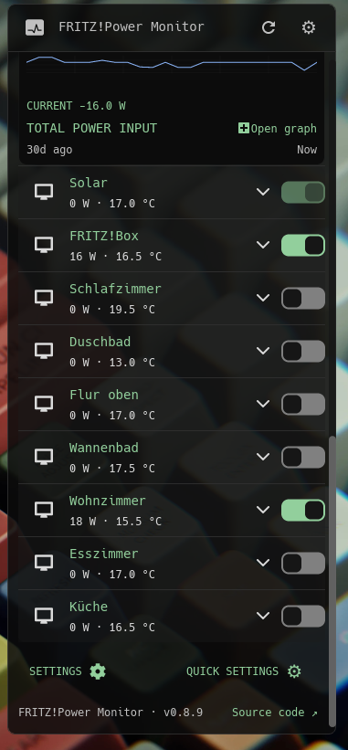
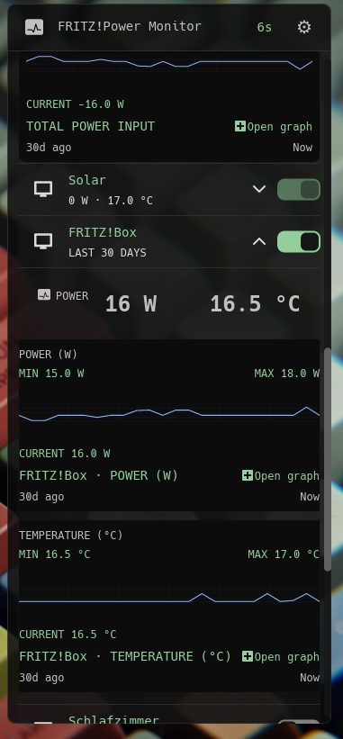
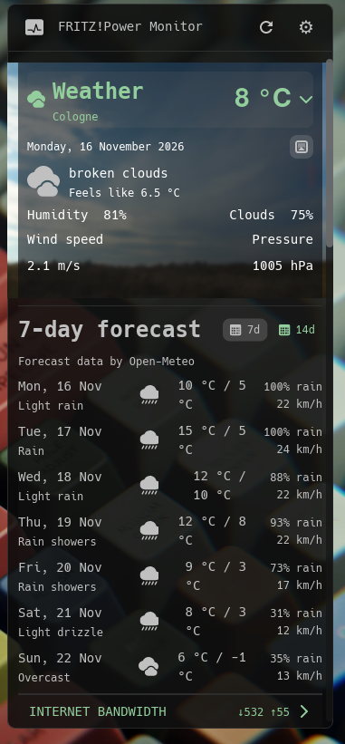
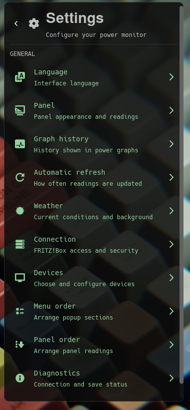
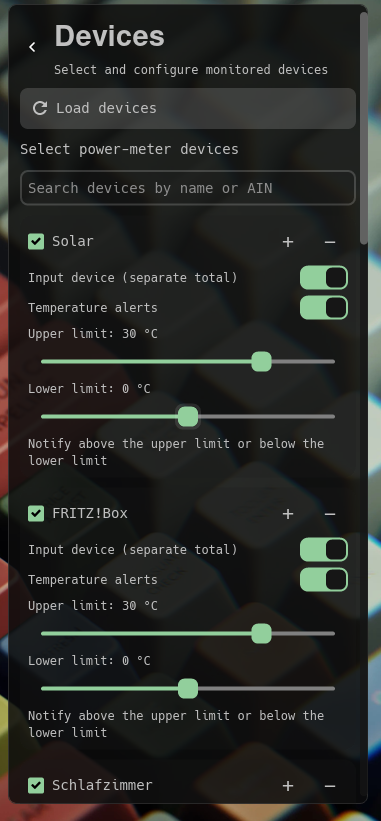
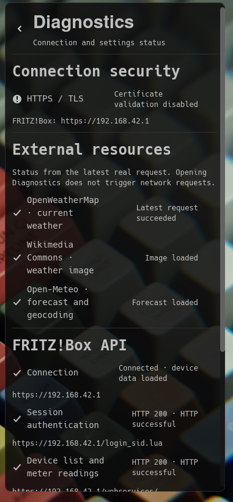
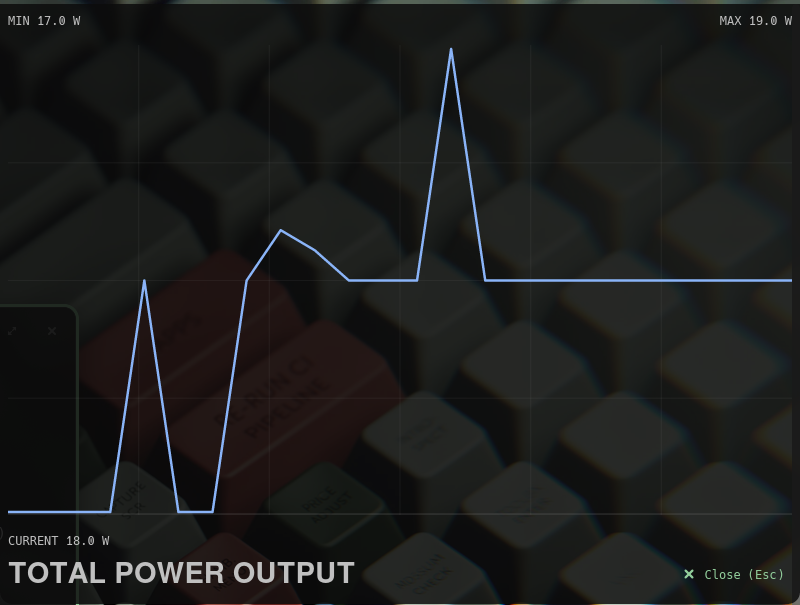

Live-Leistung im Panel
Zeigt aktuelle Watt- und Temperaturwerte direkt im COSMIC-Panel, mit einstellbarer Textgröße und optionaler Durchschnittstemperatur.
Sieh aktuelle Leistungswerte deines Haushalts, Gerätetemperaturen und optional das Wetter direkt in deinem Desktop-Panel. Übersichtliche Messwerte, hilfreiche Verlaufsdaten und kein Cloud-Konto für die Kernüberwachung.

Live-ÜbersichtLeistung · LiveSieh aktuelle Haushaltsleistung und lokales Wetter gemeinsam in deinem COSMIC-Panel. WettervorhersageWetter · 7 TagePrüfe das aktuelle Wetter und die Vorhersage für die nächsten sieben Tage.
WettervorhersageWetter · 7 TagePrüfe das aktuelle Wetter und die Vorhersage für die nächsten sieben Tage.

LeistungsverlaufÜberwachung · DiagrammeVergleiche Eingangs- und Ausgangsleistung sowie Leistungsverläufe einzelner Geräte.
GeräteeinstellungenGeräte · EinrichtungWähle überwachte Geräte aus und konfiguriere Eingänge und Temperaturwarnungen.
GerätelisteGeräte · LivePrüfe verbundene Geräte mit aktuellen Leistungs- und Temperaturmesswerten.
EinstellungsübersichtKonfigurationPasse Überwachung, Darstellung und Verhalten des Applets an.
Erweitertes PanelCOSMIC · PanelSieh die Gesamtleistung und den Verlauf einzelner Geräte im erweiterten Panel.
VerbindungseinstellungenRouter · TLSLege Routeradresse und Zugangsdaten fest und hinterlege vertrauenswürdige TLS-Zertifikate.
LeistungsdiagrammÜberwachung · DiagrammeVerfolge Änderungen des Haushaltsverbrauchs in einer detaillierten Diagrammansicht.
GerätedetailsGeräte · DetailsPrüfe einzelne Gerätemesswerte und Überwachungsdetails.Eine kompakte Anzeige im Panel für den schnellen Blick. Ein übersichtliches Menü für Details – mit unabhängig einklappbaren Abschnitten, deren wichtigste Live-Werte sichtbar bleiben. Entwickelt, um die wichtigen Informationen eines Energie-Dashboards verständlich darzustellen.
Zeigt aktuelle Watt- und Temperaturwerte direkt im COSMIC-Panel, mit einstellbarer Textgröße und optionaler Durchschnittstemperatur.
Verfolge Eingangs- und Ausgangsleistung als getrennte Summen sowie die Leistungsdifferenz in einer eigenen Ansicht. Einzelne Gerätemesswerte bleiben verfügbar.
Leistungs- und Temperaturverläufe für jedes ausgewählte Gerät sowie Netto- und Eingangsverläufe über einen einstellbaren Zeitraum.
Finde kompatible Geräte, wähle sie aus, ordne sie an, zeige Details an und steuere unterstützte FRITZ!Box-Schalter.
Optionale Desktop-Benachrichtigungen, wenn ein Gerät den eingestellten Temperaturbereich verlässt. Nach Rückkehr in den sicheren Bereich werden Warnungen erneut aktiviert.
Optionale Wetterbedingungen und Temperatur von OpenWeatherMap im Panel, ergänzt um eine ausführliche Wetterkarte mit unabhängigem Aktualisierungsintervall.
Echte Aufnahmen des Applets direkt vom COSMIC-Desktop – keine Mock-ups. Öffne die Galerie und entdecke alle zehn Ansichten.
Installiere das Applet mit wenigen Befehlen aus dem Quellcode. Für die benutzerlokale Installation sind keine Root-Rechte erforderlich.
$ git clone https://github.com/gpkvt/cosmic-ext-fritzsmart-monitor-applet.git $ cd cosmic-ext-fritzsmart-monitor-applet $ make install ✓ Release-Binärdatei erstellt ✓ Applet und Desktop-Eintrag installiert
Füge das installierte Applet deinem Panel hinzu und verbinde es mit deinem Router.
Öffne die COSMIC-Einstellungen, suche die Liste der Panel-Applets und füge FRITZ!Power Monitor. Öffne die Einstellungen erneut oder melde dich ab und wieder an, falls die Liste noch nicht aktualisiert wurde.
Öffne die Applet-Einstellungen, gib die FRITZ!Box-URL und ein Benutzerkonto mit Smart-Home-Zugriffsrechten ein und wähle anschließend Geräte laden.
Wähle kompatible Geräte aus, lege ihre Reihenfolge fest und bestimme, ob ein Gerät als Eingang von der Nettoleistung abgezogen werden soll.
Lade das Paket herunter, das zu deiner bevorzugten Installationsmethode passt. Diese Links führen direkt zu den mit v0.8.45: Versionshinweisen.
Lade ein Paket herunter und führe den zugehörigen Befehl im Verzeichnis der heruntergeladenen Datei aus. Alle Pakete werden für x86_64-Linux erstellt.
Native .deb package. APT resolves and installs the package’s declared system dependencies.
Installieren
sudo apt install ./fritz-power-monitor_@APP_VERSION@_amd64.debPortable Anwendung. Keine Systeminstallation erforderlich; mache die Datei ausführbar und starte sie.
Ausführbar machen und starten
chmod +x fritz-power-monitor-@APP_VERSION@-x86_64.AppImage && ./fritz-power-monitor-@APP_VERSION@-x86_64.AppImageInstalliere das eigenständige Flatpak-Bundle für deinen Benutzer. Dies ist unabhängig von einer Veröffentlichung im offiziellen COSMIC Store.
Installieren
flatpak install --user ./fritz-power-monitor-@APP_VERSION@.flatpakEntpacke das Archiv und starte die enthaltene Programmdatei. Es enthält außerdem Desktop-Eintrag, Anwendungssymbol, README und Lizenz.
Entpacken und starten
tar -xzf fritz-power-monitor-v@APP_VERSION@-x86_64-unknown-linux-gnu.tar.gz && ./fritz-power-monitor-v@APP_VERSION@-x86_64-unknown-linux-gnu/bin/fritz-power-monitorDie exakten Release-Dateien und veröffentlichten SHA-256-Prüfsummen. Prüfe jede heruntergeladene Datei vor der Installation.
| Datei | Größe | SHA-256 |
|---|---|---|
| AppImage | 11.6 MiB | f25b3cf54b7de38ed87021dce5c8e896212bbf4b2ff916acad242d84f729742e |
| Flatpak | 7.55 MiB | 98bf703ae52f84191041562f7fd1905efb713ad019cc18828c17e9269578d23d |
| Portables .tar.gz-Archiv | 13.3 MiB | 4a0ad923aef89b77864f4644cb9037a66314019914fc9c4b2b2be1a9b9d7f573 |
| Archiv-Prüfsummendatei (.sha256) | 131 Bytes | 8bc59bba45aa95be33f0d60f204b9751eb658a16e42efb3c3af19dab7f39f4b5 |
| Debian-Paket | 9.40 MiB | 946bfd4bdbecf76d39d1d4aee567e2ccef1f89db9ae83573a242f200f417921f |
| SHA256SUMS | 649 Bytes | 510f66105ae0d53ce3a6252319b97d0e822b604c1bc4252f81b4d5d13300babf |
Prüfe heruntergeladene Dateien vor der Installation anhand von SHA256SUMS. Die Download-Links werden beim Veröffentlichen eines Releases automatisch an die Paketversion angepasst. Die Prüfsummen-Tabelle bezieht sich auf das oben angegebene Release.
Die Überwachung soll zuverlässig, transparent und konfigurierbar sein. Hier sind einige wichtige technische Details vor der Installation.
Verwendet die Challenge-Response-Anmeldung der FRITZ!Box und prüft HTTPS-Zertifikate standardmäßig. Bei selbstsignierten Zertifikaten kann eine routerspezifische PEM-CA hinzugefügt werden, ohne die Hostnamenprüfung zu deaktivieren.
Router-Zugangsdaten und der optionale Wetter-API-Schlüssel werden in ~/.config/fritz_solar.cfg mit Zugriffsrechten ausschließlich für den Besitzer gespeichert.
Leistungswerte werden alle 30 Sekunden bis eine Stunde aktualisiert (standardmäßig alle 60 Sekunden). Das Wetter wird unabhängig alle 5 bis 60 Minuten aktualisiert (standardmäßig alle 10 Minuten).
Verbindungsfehler werden getrennt von Wetterfehlern gemeldet. Ungültige oder nicht verfügbare Messwerte werden nicht als aktuell dargestellt; funktionierende Gerätedaten bleiben davon unabhängig.
Temperaturwarnungen are optional and disabled by default. Notifications fire when a device crosses a configured limit and re-arm after the temperature returns to range.
Leistungs- und Temperaturmesspunkte werden lokal gespeichert und nach einem Neustart wiederhergestellt. Messpunkte und gewählter Aufbewahrungszeitraum bleiben erhalten. Beim Start werden die Daten erneut geladen; der eingestellte Zeitraum von 5 Minuten bis 4 Jahren gilt weiter. Die adaptive Abtastung ist auf etwa 50.000 Messpunkte je Reihe begrenzt. Die Diagramme liefern keine Tageserträge oder Prognosen.
FRITZ!Power Monitor wurde für den COSMIC-Desktop entwickelt und liest Messwerte aus, die deine FRITZ!Box-Smart-Home-Geräte bereitstellen. Welche Messwerte und Steuerfunktionen verfügbar sind, hängt vom Gerät und der FRITZ!OS-Firmware ab.
Erfordert eine COSMIC-Sitzung mit Panel-Applet-Unterstützung. Die veröffentlichten Linux-Pakete sind für x86_64; ausgelegt. Für den Build aus dem Quellcode werden eine kompatible Rust-Toolchain und GNU Make benötigt.
Erfordert eine erreichbare FRITZ!Box mit Smart-Home-Unterstützung und ein Routerkonto mit entsprechenden Zugriffsrechten. Verwende die lokale Routeradresse oder einen Hostnamen, der in deinem Netzwerk aufgelöst wird.
Verfügbar sind nur Messwerte und Steuerfunktionen, die Gerät und FRITZ!OS bereitstellen. Unterstützung für Leistung, Temperatur und Schalten kann je nach Gerätemodell variieren.
Wetter ist für die Kernüberwachung nicht erforderlich. Zur Aktivierung werden ein OpenWeatherMap-API-Schlüssel und ein Standort benötigt. Die Routerüberwachung läuft unabhängig weiter, falls das Wetter nicht verfügbar ist.
Not sure whether your setup is supported? Ask or report a compatibility question on GitHub.
Kurze Antworten zu Kompatibilität, Daten und Funktionsweise des Applets.
Eine COSMIC-Desktop-Sitzung mit Panel-Applet-Unterstützung, eine FRITZ!Box mit Smart-Home-Unterstützung und mindestens ein Gerät, das Leistungs- und Temperaturmesswerte bereitstellt. Für den Build aus dem Quellcode werden außerdem eine kompatible Rust-Toolchain und GNU Make benötigt.
Die FRITZ!Box-Kernüberwachung verbindet das Applet direkt mit deinem Router. Die optionale Wetterintegration kontaktiert OpenWeatherMap und verwendet Wikimedia Commons für illustrative Wetterbilder. Die Wetterfunktion ist optional und kann deaktiviert bleiben.
Ja. Konfiguriere die betreffenden Geräte als Eingänge und verfolge Eingangsleistung, Ausgangsleistung und Leistungsdifferenz in getrennten Ansichten. Einzelne Gerätemesswerte und Verläufe bleiben verfügbar.
Yes. Graph history is persistent and is not limited to the current applet session or a 24-hour window. Samples are stored locally in ~/.local/share/fritz-power-monitor/history.json und beim Start des Applets wiederhergestellt. Den Aufbewahrungszeitraum kannst du in den Einstellungen festlegen → Der Diagrammverlauf wird über einen Zeitraum von 5 Minuten bis 4 Jahren gespeichert. Sowohl diese Einstellung als auch die Messpunkte bleiben nach einem Neustart erhalten. Die Abtastrate passt sich automatisch an den gewählten Zeitraum an und ist auf etwa 50.000 Messpunkte je Reihe begrenzt. Der Verlauf liefert keine Tageserträge oder Prognosen.
Ja. Hinterlege das PEM-Zertifikat des Routers in der Einstellung für das vertrauenswürdige CA-Zertifikat. Das Zertifikat wird als Vertrauensanker hinzugefügt; die normale Prüfung der Zertifikatskette und des Hostnamens bleibt aktiv.
Für Geräte, die eine Schaltfunktion über die FRITZ!Box bereitstellen, enthält das Menü einen Schalter. Er wird erst nach Bestätigung des Befehls durch den Router und aktualisierten Messwerten freigegeben.
Erstelle ein Issue im Projekt-Repository. Gib deine COSMIC- und FRITZ!OS-Version sowie relevante Diagnosedaten an, veröffentliche jedoch niemals Passwörter, API-Schlüssel oder private Routerdetails.
Entdecke den Quellcode, verfolge die Entwicklung oder installiere FRITZ!Power Monitor auf deinem COSMIC-Desktop.